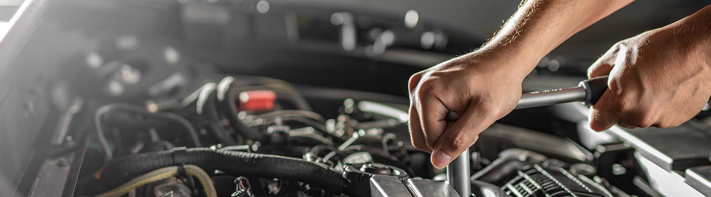

Mantenimiento Especializado Volkswagen
Nuestro equipo de expertos lo ayudarán a mantener su vehículo cómo recién salido de fábrica.Descubrí más sobre nuestras PROMOCIONES en línea.

Nuestro equipo de expertos lo ayudarán a mantener su vehículo cómo recién salido de fábrica.Descubrí más sobre nuestras PROMOCIONES en línea.